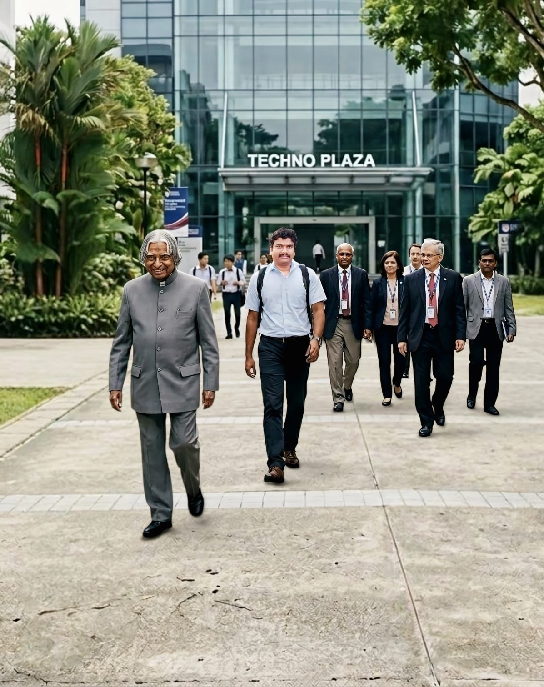
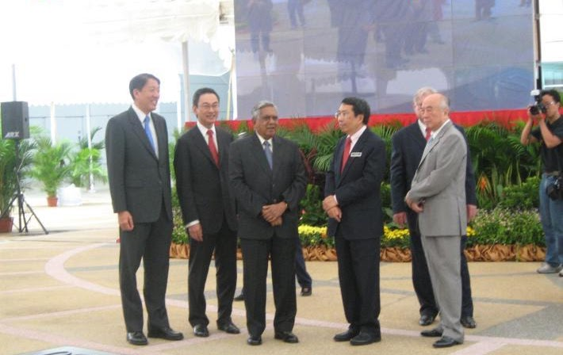
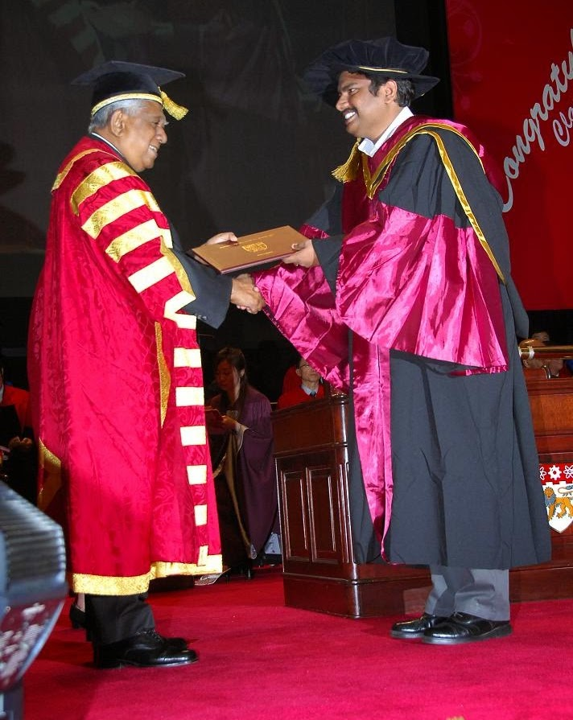
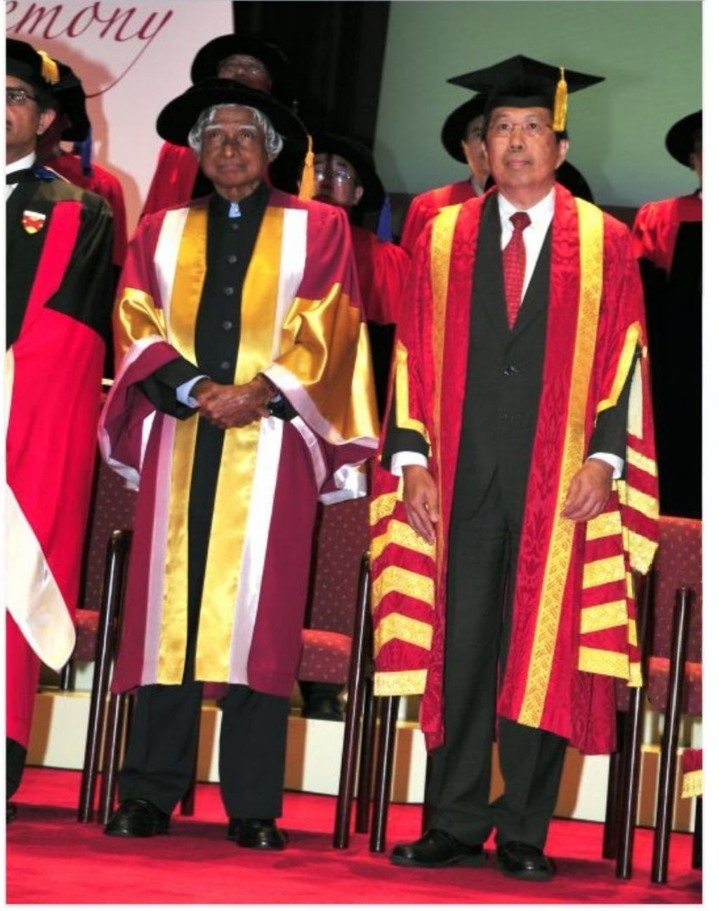
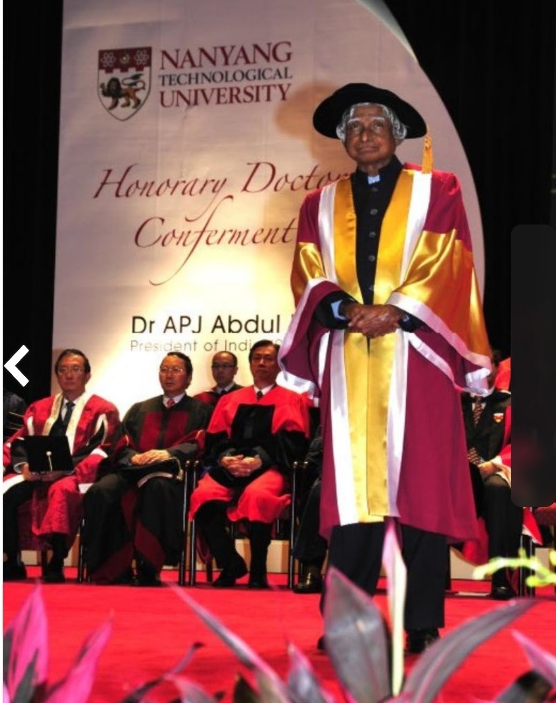

Learn Engineering
by Actually Experimenting.
An Open-Access Virtual Engineering Experimentation Ecosystem
Created by GARRF to help students learn, investigate, simulate, test and innovate without the traditional barriers of laboratory access and research funding.
From Zero Funding to Zero Barriers
Students should not have to wait for expensive laboratories, institutional approvals or large research grants to begin learning how engineering systems actually work.
What is the Kalam Research Zero Funding Lab?
A new model for engineering education and research: experiment first, learn deeply and innovate freely.
Through interactive virtual experiments, students can observe, calculate, modify parameters, test hypotheses and develop engineering intuition.
Virtual experimentation complements — not replaces — real-world laboratory education.
CONCEPT → EXPERIMENT → SIMULATION → DESIGN → PROTOTYPE → INNOVATION
Our Long-Term Vision
Dream come true 'Moment' with Honorable Dr. APJ Abdul Kalam
Nearly two decades later, that sacred walk came full circle at IISc Bangalore with the Er. Avinash Shirode Yashokirti Award 2026 for impactful contributions to engineering.
To honor his vision of democratic education, I founded the Dr. APJ Abdul Kalam Research Centre under Virtual AISIA, operating strictly on a revolutionary "Zero-Funding" model.
Today, undergraduate researchers innovate freely with accessible tools—truly carrying forward the walk that began behind a giant at NTU into tomorrow's ignited minds.

Walking behind Dr. APJ Abdul Kalam outside Techno Plaza, NTU Singapore.
🔍 Click to enlarge & read
President Mr. S R Nathan, Cabinet Ministers, and NTU Leadership.
🔍 Click to enlarge & readSingapore President Mr. S R Nathan confers Doctorate on Dr. Kalam.
🔍 Click to enlarge & read
Presidential felicitation and degree certificate presentation.
🔍 Click to enlarge & read
Dr. Kalam in ceremonial robes standing alongside NTU President.
🔍 Click to enlarge & read
Dr. Kalam addressing the students and faculty of NTU Singapore.
🔍 Click to enlarge & readPhoto Title
Story description will appear here.
This is more than a conventional laboratory centre. It is a joint GARRF–University initiative designed to bring virtual laboratories, AI Teachers, Robotics, engineering projects and industry-oriented learning together at the institution, with the objective of taking students one step closer to jobs and placements.
Virtual Engineering Labs
Choose the laboratory you need and contact Prakruthi, our AI assistant, for a free password to access these experiments. These laboratories are absolutely free; you can also email us with your feedback for improvements.
🏗️ Civil Virtual Laboratories
Structures, stress-strain, bridge engineering, trusses and advanced structural analysis. Get Free password from Founder by contacting Prakruthi, AI Assistant.
Click to Enter Virtual Laboratory of Civil Engineering →⚡ Electronics Laboratory
Circuits, digital logic, semiconductor devices and electronic systems through interactive learning.
ENTER ELECTRONICS LAB → CIRCUIT LOGIC → SEMICONDUCTOR LAB SUITE (DEDICATED TO VIKSIT BHARAT 2047)→ TALK TO CHAMUNDI, AI TEACHER →🤖 Robotics & Automation
Industraial Robots, Autonomous steering, path planning, PID control, Arduino robotics and intelligent machine concepts.
Welcome to Industrial Robot Club: Join Founders and Kalam Sir → Welcome to Robotic World : Club 1 → Welcome to kids Robot Club 2 → Gripping Force and Insertion Force of Industrial Robot → Robot Gripping Force on Civil Engineering Brick → Types of Funac Robot, Buid and Test → TALK TO CHITTI — VOICE AI TEACHER → AUTONOMOUS STEERING → PATH PLANNING → PID CONTROL → ADVANCED PID → LOAD CARRYING ROBOTS — ADVANCED → ARDUINO ROBOTICS STUDIO → Humaniod (17 Servo)→ Humaniod (build with founders)→ ARDUINO Strain Gauge Measurement →📡 PZT Structural Health Monitoring
Piezoelectric sensing, electromechanical impedance, vibration, signal analysis and intelligent inspection.
Basic PZT EMI Signatures → Structural Health Monitoring (Multiple 5 Levels of Experiments), A Suite Dedicated to Prof. Soh Chee Kiong, Prof National University of Singapore, He was Previously with Nanyang Technological University.→ FFT Receiver Only → 🎓 ENTER MASTERS SHM SUITE →🔩 Mechanical & Aerospace Engineering
Study machines and mechanisms involving force and movement, materials science, testing, mechanics and engineering design.
Deflections of Beams → Universal Testing Machine LAB → Car Crash — Impact & Velocity → Deflection, Natural Frequency, Damping → Load Beam Deflection → Vibration Resonance of Beams → Torsion Testing → X-RAY INSPECTION →⚛️ Quantum AI
We have Introduced World First QUANTUM AI in several Areas of Research (These are our Proud Products)
1. EMI (Electromechanical Impedance for PZT/ Smart Materials)
2. EMR (Electromagnetic Radiations for Plasmons/ Metamaterials) for SHM.
3. Road Material Estimator and Money Savor Application
4. PZT-EMI Interactions for SHM,
Via Annamdas 3D Solvers, Quantum algorithms, hybrid quantum-classical solvers, optimization, and advanced artificial intelligence models.
🔬 Semiconductor Technology
Semiconductor physics, microchip fabrication workflows, cleanroom protocols, and integrated circuit design (Dedicated to Viksit Bharat 2047).
BASIC SEMICONDUCTOR EXPERIMENT → ENTER SEMICONDUCTOR LAB SUITE →🛰️ Satellite Technology
Orbital mechanics, CubeSat system design, telemetry, ground station communication, and remote sensing payload simulation.
ENTER SATELLITE LAB →🚁 Drone Technology
UAV dynamics, flight stabilization, telemetry analysis, autonomous navigation, and aerial payload experimentation at GARRF Flying Virtual Club.
Fly Virtual Drone with Kids →🎓 Master of Engineering
Postgraduate-level multi-physics modeling, advanced structural analysis, system identification, and research-grade simulation frameworks.
ENTER MASTERS RESEARCH SUITE → TALK TO PROF. MANOHAR →📱 Crops & Yield
The backbone of Rural economy is agriculture, every engineer of bharat must have some basic knowledge of rural world.
Know your Land (Telangana, Andhra Pradesh) →Specialised Program for M.E. / M.Tech
Mechanical • Civil • Aerospace
A specialised Structural Health Monitoring learning environment bringing together PZT sensors, EMI, vibration, signal analysis, FFT, damage detection, NDT concepts and AI-assisted engineering learning.
This suite is designed to take students beyond individual experiments toward postgraduate-level engineering reasoning and research via AI Teaching (24/7 Availability) : Master SHM (Lab Lecturs by Prof Manohar, Prof Ananth, Prof Chandra & Prof Nanjunda) "EMI + Lamb Waves" →
SHM Structural Health Monitoring
Prof. Manohar
AI Teacher for Advanced Structures & Structural Health Monitoring.
OPEN PROF. MANOHAR →Prof. Ananth
Masters SHM teaching team — advanced engineering learning and analysis.
MASTERS SHM FACULTYProf. Chandra
Masters SHM teaching team — engineering interpretation and research learning.
MASTERS SHM FACULTYProf. Nanjunda
Masters SHM teaching team — advanced structural monitoring and experimentation.
MASTERS SHM FACULTYUnderstand piezoelectric transducers, excitation and sensing.
Explore electromechanical impedance signatures and material/structural changes.
Understand structural wave propagation and interaction with defects.
Move from time-domain signals to frequency-domain engineering interpretation.
Compare healthy and damaged structural conditions and identify changes.
Connect virtual experiments with non-destructive testing and research concepts.
Meet the AI Teachers
AI Teachers extend the virtual laboratory ecosystem by guiding students through specialised engineering learning and experimentation.
SitaRam AI
GARRF Master Adviser supporting knowledge discovery, research guidance and navigation across the ecosystem.
ACCESS SITARAM AI ↗Prakruthi
GARRF AI Assistant for students, faculty, visitors, industry partners and Foundation enquiries — including experiment passwords.
CALL PRAKRUTHI →Prof. Manohar
AI Teacher for Structures and Structural Health Monitoring, particularly the Masters SHM Suite.
OPEN PROF. MANOHAR →Chamundi
AI Teacher for Electronics and Robotics, guiding students through virtual experiments.
OPEN CHAMUNDI →Chitti
Robotics Voice AI Teacher — supporting robotics learning, experimentation and engineering reasoning.
TALK TO CHITTI →Godavari
AI Teaching support for Civil Engineering, including beam and structural learning.
OPEN GODAVARI LAB →VIRUDH
AI Defective Digital Twin and visual inspection direction for structural damage research.
ACCESS VIRUDH ↗AI Maa
Student Project Assistant supporting structured long-duration engineering and research projects.
GARRF PROJECT SUPPORT →Prof. Ananth
Member of the Masters SHM teaching team, supporting advanced postgraduate engineering learning.
MASTERS SHM SUITE →Prof. Chandra
Member of the Masters SHM teaching team, supporting engineering interpretation and research learning.
MASTERS SHM SUITE →Prof. Nanjunda
Member of the Masters SHM teaching team, supporting structural monitoring and experimentation.
MASTERS SHM SUITE →GARRF's AI-assisted learning model is designed to support both structured learning and interactive exploration, while keeping the student actively involved in the experiment.
How Students Can Use the Lab
You do not need to know everything before you begin.
Choose
Select the engineering laboratory or specialised programme you need.
Learn
Read the objective, theory, components and instructions.
Experiment
Change parameters, observe results and test your understanding.
Innovate
Ask new questions, modify experiments and develop your own ideas.
Academic Depth + Industry Experience
GARRF brings together academic knowledge, engineering research, project management, international experience and a global academic-industry network.
Dr. Venu Gopal Madhav Annamdas
Founder & Chief Scientific Advisor, GARRF
Researcher, educator and engineering professional with more than two decades of international experience, combining academic research with industry-oriented engineering and project management.
Academic–Industry Network
GARRF has the support and participation of people associated with 30 global institutions, strengthening its academic, research and industry ecosystem.
GARRF is a Section 8 non-profit organisation working across research, education, innovation and rural development.
The Foundation connects advanced academic learning with practical engineering, project work, industry exposure and student innovation.
VIEW GARRF ORGANISATIONAL & ADVISORY NETWORK →Curiosity Does Not Need a Grant.
Early experimentation should not be stopped simply because a student does not have access to expensive equipment or research funding. Virtual experimentation can provide the first step toward deeper research, physical prototyping and innovation.
START EXPERIMENTING →